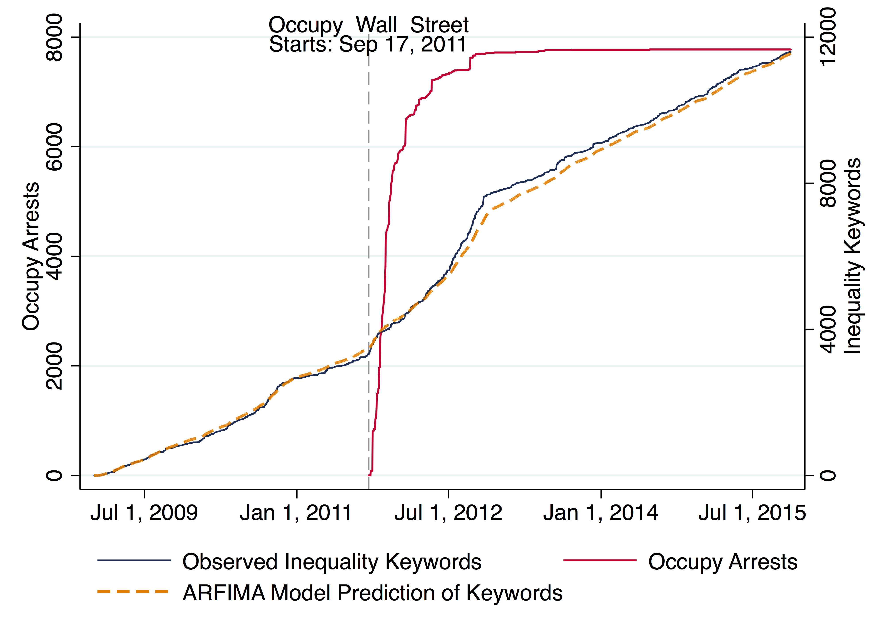
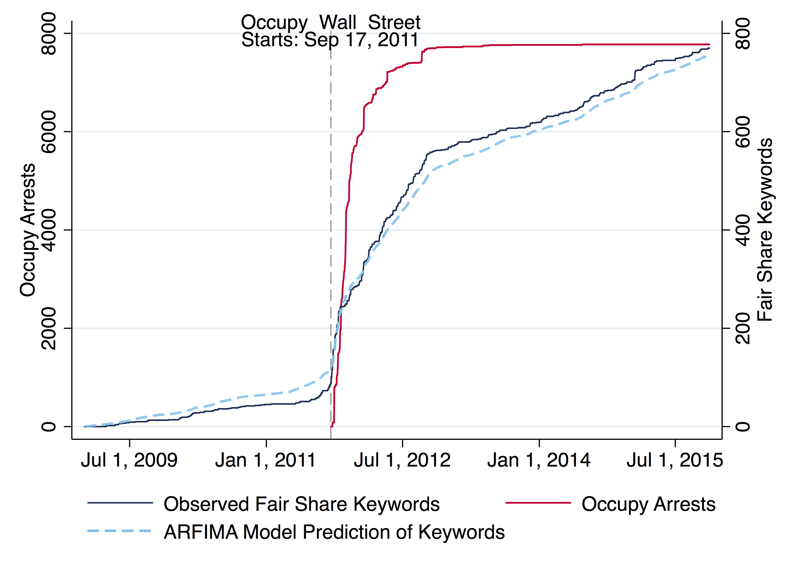
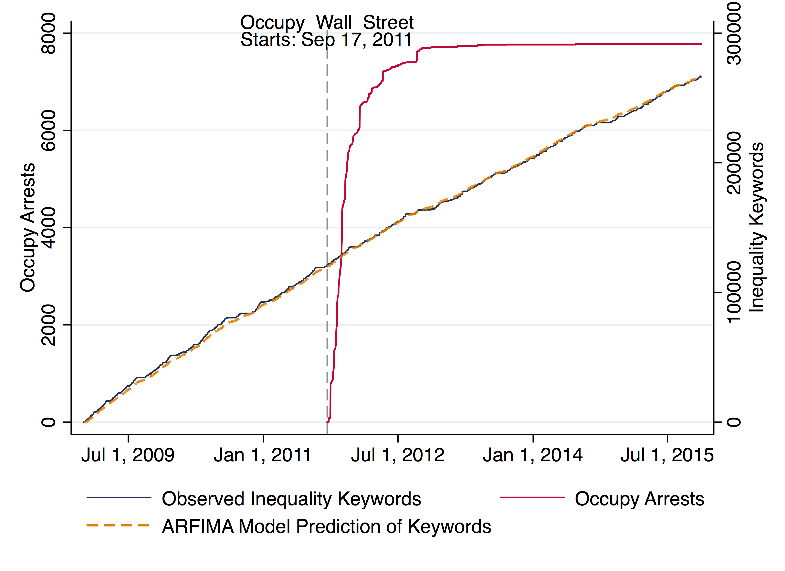

Results
|
In the analysis, I test different mechanisms, including repression (Occupy Wall Street arrests), media coverage of Occupy, public opinion, and presidential agenda-setting by applying a novel combination of web scraping, natural language processing, and time series models. I suggest that movement success can be measured in its ability to shape discursive opportunity structures, and I argue that the role of the president should be at the forefront of social movements research. Ultimately, I demonstrate (1) that the repression of Occupy protesters not only predicts media coverage but also increases discursive opportunities through President Obama and Congress, (2) that media coverage of Occupy predicts presidential discourse, (3) that the president’s rhetorical shift increases congressional response, and (4) that this change persists after the movement faltered.
Significant Dynamic Relationships Shown in ARFIMA ModelsNote: Solid lines indicate statistically significant coefficients in one or more models. Edge thickness weighted by statistical significance of the most significant factor in any model, reported next to the indicated hypothesis. Significance levels using z-test. Indicated probabilities denote that one or more ARFIMA models has a coefficient predicting the directed edge at the specified probability threshold.




Government Cumulative Observed and Modeled Speech versus Occupy ArrestsNote: Observed Values of ARFIMA Model Predictions from Tables 4 and 5 (Count Models) for Inequality and Fair Share rhetoric by President Obama (Table 4) and Congress (Table 5). Occupy arrests are displayed in each graph (acutely increasing solid line). The two closely correlated lines are observed speech (solid line) versus predicted speech (dashed line). The vertical dashed line marks the beginning of Occupy Wall Street, September 17, 2011. An interactive plot of the observed data is available online. |